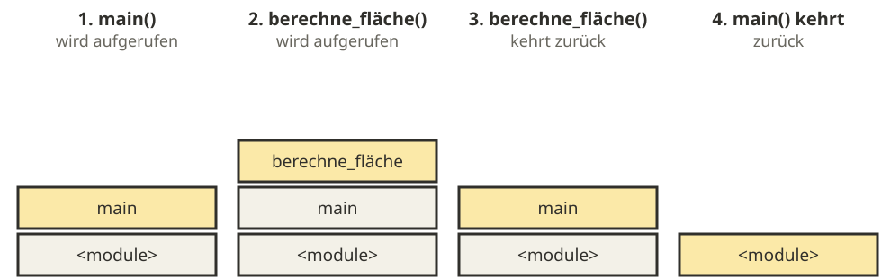

Funktionen
Joern Ploennigs · AI4SC
Midjourney: Functional Lines, ref. C.E.B. Reas
Hörsaalfrage
Wofür verwendet man if, elif, else?
Wiederholung: IF, ELIF, ELSE
if, elif, else sind Befehle zum Verzweigen von Programmen in Python.
Hörsaalfrage
Welche Schleifentypen gibt es?
Wiederholung: Schleifen
Schleifen sind ein wichtiger Ansatz in der Programmierung, um wiederholende oder inkrementelle Lösungen zu realisieren.
In Python sind verfügbar:
for(entspricht einer Zählschleife bzw. For-Each-Schleife)while(entspricht einer While-Schleife)
Wichtige Eigenschaften:
- Funktionieren genau wie alle anderen Steueranweisungen durch Einrückungen nach einer einzeiligen Definition
- Anders als in Funktionen sind Variablen aus Schleifen auch außerhalb der Schleife verfügbar!
- Andere Schleifenvarianten sind zwar nicht explizit vorhanden, aber funktionell nachbildbar
Wiederholung: While-Schleifen
While-Schleife
Bei der While-Schleife kann die Bedingung schon am Anfang falsch sein. Die Schleife muss also nicht ausgeführt werden.
Do-While-Schleife
Bei der Do-While-Schleife wird die Bedingung erst am Ende geprüft. Die Schleife wird also immer mindestens einmal durchlaufen.
Warum brauchen wir Funktionen?
- Wiederkehrende Schritte nur einmal schreiben
- Komplexe Aufgaben in kleine, verständliche Bausteine zerlegen
- Namen geben dem Code Bedeutung und machen Programme lesbarer
- Änderungen müssen nur an einer Stelle gemacht werden
Funktionen – Mathematisch
Funktionen setzen in Programmiersprachen das mathematische Konzept der Funktion um. Sie stellen eine Abbildung von einer Eingabemenge auf eine Ausgabemenge dar.
Abbildung: Eine Funktion \(f\) ordnet jedem Element \(x\) einer Definitionsmenge \(D\) ein Element \(y\) einer Zielmenge \(Z\) zu.
\[ f : D \to Z, \quad x \mapsto y \]
Funktionen – Programmierung
Funktion
Wiederverwendbarer Programmcode, der eine bestimmte Aufgabe ausführt.
- Nehmen ein Tupel an Eingabewerten (Argumente)
- Führen eine festgelegte Folge von Ausdrücken und Zuweisungen aus
- Geben ein Tupel an Ausgabewerten zurück (Rückgabewerte)
- Werden nur ausgeführt, wenn sie in einem Ausdruck aufgerufen werden
- Die Signatur (Name, Parameter, Rückgabe) legt fest, was eine Funktion verspricht – dazu später mehr
Funktionen in Python
- Funktionsdefinitionen beginnen mit
def - Es folgen Name, Argumente und ein
: - Argumente gelten im gesamten Funktionskörper
- Beim Aufruf werden die Argumente mit Eingabedaten belegt
Beispiel – Verdopplung eines Werts
Beispiel – Euklidische Distanz
Funktionen mit Ausgabe
returnbeendet die Ausführung und liefert Ausgabewerte zurück- „Zurückgeben“ heißt: Der Rückgabewert ersetzt den Funktionsaufruf im ursprünglichen Ausdruck
- Ist kein
returndefiniert, gibt die FunktionNonezurück
Standardwerte bei Parametern
- Argumente können Standardwerte besitzen
- Beim Aufruf optional; übergebene Werte überschreiben den Standard
Beispiel – Maßeinheit an Zahl anhängen
Vorsicht: Veränderliche Standardwerte
Warum passiert das?
Die Liste [] wird einmalig beim Laden der Funktion erstellt — nicht bei jedem Aufruf. Alle Aufrufe teilen dieselbe Liste.
Achtung
KI generiert diesen Fehler häufig. Prüfen Sie Standardwerte auf veränderliche Typen (list, dict, set).
Jeder Funktionsaufruf erhält einen Frame
Der Stack wächst und schrumpft

- Lokale Namen entstehen beim Eintritt in die Funktion und verschwinden beim Rücksprung.
- Jeder Aufruf hat seinen eigenen Frame, auch bei Aufrufen derselben Funktion.
Übergabe von Argumentwerten (Konzepte)
Pass-by-value
- Die Funktion arbeitet mit einer Kopie des übergebenen Werts
- Änderungen an dieser lokalen Kopie bleiben innerhalb der Funktion
- Oft einfacher zu verstehen und sicherer als unbedachtes Referenz-Überschreiben
Pass-by-reference
- Die Funktion arbeitet mit einer Referenz auf dieselben Daten
- Veränderungen am Objekt sind auch außerhalb der Funktion sichtbar
- Spart Zeit und Speicher
Was Objekte und Referenzen sind, steht in 04c_Objects.
Übergabe von Argumentwerten in Python
- Python übergibt immer eine Referenz auf ein Objekt an den Parameternamen
- Dieses Modell wird oft „Pass-by-assignment“ oder „call by sharing” genannt
- Bei immutable Typen wirkt eine Neubindung lokal, deshalb sieht es oft wie pass-by-value aus
- Bei mutable Typen sind Objektänderungen sichtbar, deshalb wirkt es oft wie pass-by-reference
- Wird eine mutable Variable nur neu gebunden, wirkt das nicht außerhalb
Built-in Funktionen
Python hat eine umfangreiche Liste eingebauter Funktionen.
| Funktion | Zweck |
|---|---|
print(), input() |
Ausgabe, Eingabe |
id(), type() |
Variablen-ID, Typ |
int(), str(), float() |
Typ-Konvertierung |
list(), tuple(), set(), dict() |
Komplexe Typen |
len() |
Länge eines komplexen Typs |
abs(), max(), min() |
Mathematische Grundfunktionen |
exit() |
Programm beenden |
sorted() |
Sortieren |
| … |
Wozu werden Funktionen genutzt?
Übersichtlichkeit, Modularität, Wiederverwendbarkeit „Write once, use anywhere“
Moderner Stil: Programme so weit wie möglich in grundlegende Funktionen aufteilen
Die Signatur als Vertrag
calculate_area→ Name beschreibt die Aufgabelength: float, width: float→ Eingabetypen sind festgelegt-> float→ Rückgabetyp ist bekannt- Die Signatur ist eine vollständige Spezifikation — ohne Implementierung
Was prüft man an der Signatur?
Vor dem Lesen der Implementierung
- Name: Passt er zur Anforderung?
- Parameter: Richtige Typen und Reihenfolge?
- Rückgabetyp: Stimmt er mit dem erwarteten Ergebnis überein?
- Docstring: Beschreibt er Grenzfälle?
Agentic workflow: Wenn KI eine Funktion generiert: Signatur zuerst lesen. Stimmen Eingabetypen und Rückgabetyp mit der Anforderung überein? Wenn nicht — Signatur korrigieren und neu prompten.
Übung: KI-Code lesen – Schritt 1
Eine KI hat diese Funktion generiert. Lesen Sie erst nur Signatur und Docstring:
Frage: Welche zwei Tests würden Sie schreiben — bevor Sie die Implementierung lesen?
Übung: KI-Code lesen – Schritt 2
# Test 1: Bekanntes Ergebnis prüfen
# Rohr ∅ 0.1 m, Volumenstrom 0.001 m³/s
# Fläche A = π·(0.05)² ≈ 0.00785 m² → v = Q/A ≈ 0.127 m/s
assert abs(flow_velocity(0.001, 0.1) - 0.127) < 0.01
# Test 2: Grenzfall — Was passiert bei Durchmesser 0?
# Erwartet: Division durch 0 → Python wirft einen ZeroDivisionError
# (Umgang mit Fehlern: S07)
result = flow_velocity(0.001, 0.0)Dann: Lesen Sie die Implementierung. Stimmt sie mit Ihren Erwartungen überein? Wie solche Tests systematisch aufgebaut werden, behandelt 08a_UnitTest.
Übung: KI-Code lesen – Schritt 3
Was stimmt?
- Formel \(v = Q / A\) korrekt
- Rückgabetyp
floatkorrekt - Import im Funktionskörper — ungewöhnlich, funktioniert aber; meist steht
importaus Effizienz- und Stilgründen am Modulanfang
Was fehlt?
- Kein Guard für
pipe_diameter == 0 - Keine Einheitenprüfung
- Kein Hinweis auf negative Eingabewerte
Agentisches Arbeiten mit Funktionen
Wenn KI eine Funktion generiert:
- Signatur lesen: Stimmen Eingabetypen und Rückgabetyp mit der Anforderung überein?
- Test schreiben: Einen bekannten Testfall formulieren — bevor die Implementierung gelesen wird
- Docstring prüfen: Beschreibt er Grenzfälle (None, 0, leere Liste)?
- Implementierung lesen: Stimmt sie mit der Signatur überein?
- Wenn nicht: Signatur korrigieren und neu prompten
Questions

Ingenieurs-
Informatik